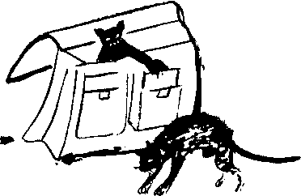

Tasviri Kubad Duvduvani Efendi’nin ancak zayıf bir rivayet halinde birkaç kitap düşkünü ve sahaf tarafından varlığı bilinen ama eseri hiç görmemiş binlerce insan tarafından bir amentü gibi inanılan ve asla şüphe edilmeyen kitabım ele geçirmek, hem de olmadık bir şekilde ele geçirmek, “müdekkikan ve müteverrihan-ı zaman"dan Ferid Bey’in kendisini de olmadık heyecanlara boğmuştu.
Talimhane’nin arka sokaklarından Elmadağ’a doğru koşar adım ve bilinçsizce yürürken, akşamın oluşuna ve karanlığın hafiften bastırmasına şükrediyor, çiseleyen soğuk yağmurun rüzgârla beraber yüzünü kamçılamasına ise özellikle memnun oluyordu. Seyyar eskicinin arabasından kitabı kaldırdığı zaman göğsünden boğazına doğru yükselen sıcaklık, şimdi tamamen yanaklarından dışarı fışkırıyor, yüzünde nefret ettiği o lüzumsuz pembelikleri oluşturuyordu. Tanıdık birine filan rastlamasına gerek yoktu utanması için. Böyle zamanlarda kendini, kilisede porno seyrederken cemaatin en şişman, en kara, en mutaassıp duluna yakalanmış bir papaz, herhalde Katolik bu papaz gibi hissediyor, önüne gelene, bakkala çakkala, taksiciye açıklamalar yapmak, abuk subuk konuşmak zorunda görüyordu. Gideceği yönün tam aksine birkaç yüz metre yürüdükten sonra karşıya geçti, bir araba durdurdu, şişman vücudunu arka koltuğa inşaat kumu boşaltır gibi bırakırken verdiği nefeste “Ulus” sözü de olmalıydı ki bir süre sonra şoförün,
“Ulus'un neresi?" dediğini duydu. Buna da ayrıca sevindi. Bazen yılların verdiği alışkanlıkla “Fındıkzade" diyor, duruma ayılığı zaman ufak bir kriz yaşamadan toparlanamıyordu.
“Işıklardan sağa lütfen" diyerek evini tarif etti.
Asansör yukarılarda bir yerde takılmış kalmıştı. Küfretmeyi bile ihmal ederek beşinci kattaki dairesine tırmanmaya başladı. Kapısının önüne geldiği zaman yüzü papaz pembesi değil zebani kırmızısı olmuştu ama zerre kadar utanmayı aklına getirmeden anahtar destesini karıştırmaya başladı. Başladı ve zeminin ayakları altından göçtüğünü, yok olduğunu, yittiğini, tüm hücrelerinde, kılcallarında, “yetmiş iki bin tüyünün" dibinde hissetti.
Çantası... çantasını takside bırakmıştı! Kendi katında duran asansörü görmeksizin, umutsuzca, umarsızca merdivenlerden yuvarlanarak inmeye başladı.
Beyninde akkor halinde mücessem tek bir düşünce vardı. Hali de pek perişandı doğrusu. Ona bakan ve ondan biraz daha yetenekli bir kalem sahibi, bir dönem Ulus evlerinin göz boyamaya yarayan ve olmazsa olmaz akşamından olan siyah mermer basamaklardan aşağılara doğru süzülen bu dağlar gibi insan gövdesini, sıvandığı kızgın teflon tencerenin kenarından dibine doğru, eriyerek hızla inen bir tereyağı kütlesine benzetebilirdi. Ferid Bey ağarmaya başlamış kısa kızıl sakalları ile hemrenk olmuş yüzü, uğradıkları ani tevahhuştan ötürü kendileri de dışarı uğrayan gözleri, burkulan sağ ayak bileği ve her türlü tereyağı benzetmesi bir yana, yüz otuz beş bu kadar kilosuyla zemin kata inip dış kapıya vardığı zaman dünyanın en mutlu adamıydı: Taksici elinde çantası, kapıcının karısı ile boğuşuyor, verdiği son derece düzgün tariflere rağmen aldığı inatçı “yok”larla uğraşıyordu.
– Yav nasıl yok... şimdi bıraktım diyorum sana... uzun… iri yarı... üzerinde kırmızı bir deri mont var... sen de şuncağızda oturuyordun... hah... abi... yav ne salak şey...”
Taksiciyi cüzdanından çıkardığı bir 100 dolarla savdı. Yaşar Hanım ile başka zaman olsa uğraşırdı, hiç rağbet etmeden, bu sefer asansöre yöneldi. Soluk soluğa idi. Siyah gömleği terden sırılsıklam; saçları, yüzü gözü karışmış, gayr-i ihtiyarî bir mutluluk sigarası yaktı. Bir yandan da çantasını bacakları arasına kıstırmış, hâlâ elinde tuttuğu anahtar destesini karıştırıyor, asansörün kapısının hangi anahtarla açılacağını kestiremediği için, tek tek tüm anahtarların nereye ait olduklarını sayıyor, kapının anahtarını bir türlü bulamıyordu. Yaşar Hanım bilmiş bilmiş yardımına yetişti, en azından Ferid Bey’in bileği kadar kalın ve bir o kadar da beyaz bileğinin ucundaki gülünç denecek kadar ufak elini uzatarak asansörün kapısını çekiverdi. Başka zaman olsa kendini düşürdüğü bu salak durumdan dolayı Utku Suat Ferid Ceylani Bey hayıflanır, bozulurdu. Hiç üzerinde durmadı.
“Aşkolsun Ferid Bey yine mi asansörde sigara içiyorsunuz?”
Arkasından gelen yapmacık sitemli ve aksanlı sese, olduğu yerde, yaramaz bir öğrencinin tepesinden bükerek çevirdiği bir yerküre nasıl dönerse öyle dönerek tepki verdi. Şu anda koskoca bir Asya Kıtası yani naçizane Ferid, pek narin, çıtı pıtı bir Avrupa’ya dönmüştü.
Bu ses... bu ses... Duvduvani Efendi’yi bile bir an için silen bu ses... Sigarasını yere atarak siyah mermerin üstünde ezdi. Yapmacıklı ses daha da kızgındı:
“Ferid Bey... aşkolsun! Hani karar almıştık?”
Zeytin rengi saçlar, beyaz Carrera mermerinden bir cilt ve masmavi gözler... Ferid Bey’in “müşahhas ve mücessem Avrupa’sı”. Tamamen gotik.
“Ha... haklısınız Anette Hanım... Özür dilerim... Duvduvani Efendi'yi önce kaybettim sonra buldum da... çok sevinçliyim..."
Kızın soran bakışları ile kendine geldi. Ayaküstü, Tasviri Duvduvani Efendiyi Avrupa’ya nasıl anlatırsın?
“Kedim... Duvduvani Efendi kedim oluyor..."
“Yaa, çok severim ben... Ama onun için de kararımız var... apartmanımızda kedi-köpek beslemek yasak..."
“Biliyorum... Zaten o yüzden çantanın içinde..." diye bir yandan kulağına fısıldayarak ve boştaki eliyle neredeyse iterek kızı asansöre soktu. O da beşinci katta yaşıyordu ve Ferid Bey’in beş küsur yıllık Ulus yaşamında tanıştığı tek kişiydi. Anette neredeyse şehvetli, kısık bir sesle,
“Sevebilir miyim?" diye sordu.
“Şey... çok korkmuş durumda” diyerek şişkin, kâğıt tomarları ve “gerçek” Duvduvani Efendi ile dolu çantasını gösterdi:
“Yine fırlar mırlar...”
Avrupa öyle kolay kolay kül yutan veya pes eden cinsten değildi:
“Ziyanı yok. Ben bir ara uğrar evinizde severim.”
Kata gelmişlerdi. Suat Ferid çelik grisi gözlerine hiç yakışmayan bir zavallılıkla yalvardı:
“Bunu bir sır olarak tutarsınız değil mi?”
“Tabii canım, aşkolsun.”
Yeni öğrenmiş filan olmalıydı, kızın iki lafından biriydi “aşkolsun.” Zengin tınılı, çm çın, rayihalı bir ses.
“Olsun ulan... biz de olsun diye dört buçuk yıldır gözünün içine bakıyoruz zaten” dedi içinden. Gözleri kendisine göre iyice yumuşamış, Avrupa’ya göre ise tüm “dört ayaklı Duvduvaniler” ciğere nasıl bakarsa öyle bakıyordu:
“Ne zaman arzu ederseniz, çok memnun olurum.”
Kapıyı açtı. Anette’in hâlâ kapının önünde olduğunu biliyordu. Çantasını yere attı, siyah mermer girişte “pof" gibi bir ses çıkmasını sağladı. Sonra neredeyse bağırarak “Ah yaramaz..." diye bir nida ve bu nidayı bölen muhteşem birkaç kedi miyavlaması yaptı.
Anette Hanım bir an irkilerek, hiç inanmadığı bu kedi masalını bir daha düşündü. “Acaba?” dedi ve hemen o gece bir bahane ile Ferid Bey’e düşmeye karar verdi. Avrupa zokayı yutmuştu. Ferid normalde Duvduvani'nin içine düşüp, üzerine titremesi gereken bir zamanda bu masalı uydurduğu için kendine kızıyor olmalıydı. Ama tünelin ucunda Avrupa olunca bu fedakârlığa degerdi. Duvduvani dahil, çantasını masa üzerine boca etti. Dolaptan bir iki kalem pirzola kaptı, çantanın içine attı, gerisingeri döndü. Sokağa fırladı. Yaşar Hanım hâlâ alçak taburesinin üstüne yayılmış oturuyordu. İçinden bile değil açıktan söylenerek Ferid’e baktı:
“Salak şeymiş... salak sen... kırmızı montmuş... sarı işte adamın ceketi neyi.”
Ferid dört ayaklı bir Duvduvani’yi nerede bulacağını biliyordu. Doğruca kasaba gitti. Hâlâ açıktı. O yüzden kendi pirzolasını çantasının içine saklayarak bir şeyler ısmarladı. Bir yandan da dışarıdaki Duvduvani adaylarına alıcı gözler ile bakıyordu. Birini, genç, simsiyah, temiz tüylüce birini gözüne kestirdi. Adam pirzolaları hazırlarken dışarı çıktı. Kocaman, körüklü deri çantasının kapağını açtı. Duvduvani’yi et ile aldatıp, çantanın içine kapamak diğer Duvduvani’yi edinmekten daha zor olmadı. Hayvan çılgına dönmüş, debeleniyordu ama Avrupa için memleket hayvanları dahil herkese biraz fedakârlık isabet ediyordu işte. Kader.
Kasabın bu feryat figana tamamen bigâne kalmasına ise “kim ne derse desin... bu milleti seviyorum abi...” diye fikren müteşekkir kalarak cevap verdi. Şimdi Frengistan’da olsa, gülerek iyi akşamlar dileyen kasap, kendisi daha dairesine varmadan polisi başına tebelleş etmişti. Yarısı canlı yarısı yamyassı birkaç kilo et ile evine döndü. Ne olur ne olmaz diye merdivenden, ama ağır ağır, eteklerinde bir yığın yaprak varmışçasına çıktı. Beş dakika sonra “Operasyon Duvduvani” her anlamıyla tamamdı. Yani, hemen hemen: Kedinin ne çakılı ne maması ne de yatacak yeri vardı.
“Ulan bari sevsem şu namussuzları” diye kendi kendine güldü. Çantanın kapağını açtı. Dışarı fırlayan hayvandan hatırı sayılır bir tırmık darbesi aldı. Kedi gidip koltuklardan birinin altına sindi. Her türlü korkusuna ve çantanın karanlığına rağmen iki kalem pirzolayı tamamen tüketmiş, kemiklerin ucunu bile kemirmişti.
“Aç ağırlaması da pek goley oluyo caanım" diye Yaşar Hanım’ların böyle konuştuğunu tahayyül ederek kendi kendine konuştu. Zaten hep kendi kendine konuşur, kendi kendini çekip çevirirdi Ferid Bey. Periyodik müzmin bekârdı. Avrupa’ya abayı yakana kadar da bu işlere pek vakit ayırmamıştı. İlim bilim, yaz çiz, vakit alıyor efem... Ama Anette, bu “âteş-i devran, bu fettan- ı âlem, bu gümüş beden, bu simin ten...”
Anette, Suat Ferid Bey’in zihnine ihtilal vermişti. Brükselliydi. Galiba on küsur yıldır İstanbul’da yaşıyordu. Birkaç okul değiştirmiş bir Fransızca öğretmeniydi. Hayli düzgün ve sevimli bir Türkçesi olmasına rağmen bazen Ferid Bey ile “frengi tekellüm” ettikleri de oluyordu. Ferid’in iflah olmayan bir haleti idi Osmanlıca... Osmanlıca kullanmak... secli konuşmak... keza Osmanlıca şiir döktürmek. “Anette sende hiç mi yok merhamet,” diye başlayan uzunca bir şiiri bile vardı.
Ferid bir yandan bunları düşünüyor, bir yandan da pirzolaları tavada çeviriyordu. Koku “Duvduvani Efendi”nin gayet cesur tavırlarla mutfağa damlamasına sebep olmuştu: Kendisine ayrılan lezzetli parçaları Ferid’in elinden kaparak yedikçe de sakinleşmiş, bayağı “hanımlaşmıştı.” Çünkü Ferid’in pek kısa bir sürede keşfettiği gibi “Duvduvani Efendi” altı yedi aylık mükemmel bir dişi kediydi. “Ne yapaydım lan... gecenin zifirinde kara kedinin cinsiyetini nasıl seçecektim...” diye kendini savundu Ferid. Bunu da çok güzel yapıyordu. Anette gelmeden yapılacak bir iki ufak iş daha vardı... Yuvarlak ekmek tahtasının üzerine birkaç çeşit peynir dizdi. Sanki saatlerdir dışarıdaymışlar da yumuşamışlar gibi olsun diye microwave’de defrost ayarında biraz ısıttı peynirleri. Sonra bir şişe kırmızı şarap açtı... Bir tek kadeh çıkarıp peynirlerin ortasına dikti... yarı dolu... Hani misafir beklemiyor, tüm bu seremoniyi kendi paşa keyfi için yapıyor havasında... Eh nasıl diyoglag hafif negligé, biraz nonchalant, öyle mi efem? Hepsini masif ahşap masanın üzerine koydu. Kütüphanesinden Vitale Cusinet ciltlerinden birini çıkardı. Mısırlı Arif Sait Paşa’nın kütüphanesinden çıkma muhteşem bir cilt, baştan aşağı altın ve Ferid Bey’in çantasından biraz daha koyuca renkli bir calf ile kaplı... Bunu dikkatli bir şekilde açtı... O sayfaya bir göz gezdirdi... Ve zil çaldı... Heyecanlar içinde fırladı. Yaşar Hanım’ın ablak yüzü ile karşılaşınca pek sevinemedi. Adeta ısırır gibi,
“Ne var?” diye sordu.
“Heç çöpün va mı?”
“Yok... yok” diyerek kadını savdı. Diğer kardeşleri öldüğü için buna “Yaşar” demişler, bu da yaşamış. Kendisinden sonra yaşayan diğer on üç kardeşine de bakmış bir kadıncağızdı...
Kendisini koltuğa aktardı, acıkıyordu, Avrupa ortalıkta yoktu... Bir kadeh şarap içti, bir daha içti... Diğer koltuğun altından kendisine muzip muzip bakan Duvduvani’ye,
“Ulan kedi, bu gecenin kârlısı sensin, adını da Duv... Duvduvani Efendi!” diye gerçek bir çığlık kopardı. Ganimet kitabı tamamen unutmuştu. Koşarak eline aldı; pis, parça parça ve üstelik sidik kokan bir cildi vardı... Tam o anda kapıda hafif bir tıklama duydu.
Anette... Kitabı alelacele yok etti... Kapıyı açtı. Evet.
“Şey dayanamadım... bu akşam geldim. Nerede sizin yaramaz effendi?”
Kızı içeri aldı. Anette’in burnuna ilk çarpan hafif sidik-pirzola-peynir karışımı bir koku oldu.
“Ah... kedi kokan bir Türk evi...” dedi.
İlk kez geliyordu. Ferid sırıtırken “Evet işte Bagyan Avrupa... hakikaten de Avrupa’sın, hiçbir boktan haberin yok...” diye düşündü. Beraber arayarak kediyi buldular. Ama koltuğun altından çıkmadı bir türlü... Anette:
"Ah kediler...” dedi.
Gerçekten böyle midir kediler? Düşündü. Kedi davranışları üzerine bir şeyler okuması lazımdı. Anette, eğildiği parkeden doğruldu. Yüzüne kan akmış, sedef cildi kırmızılaşmış, nerede ise Ferid’in hâlâ elinde tuttuğu kadehteki şarabın bir yansıması olmuştu...
“Siz de içer miydiniz?" diye en doğal haliyle sordu.
“Yemek yiyordum da...” diye açıklamaya devam etti. Tabii canım, hem yer hem de şarap alırmış... yalnız... “Yalnız ne? Erkek arkadaşı gelecek, telefon bekliyor, ne?" diye hızlıca düşündü. Kız devam ediyordu:
“Yalnız evime gidip ocağı kapamam gerek. Yemek sicakiyordum da...”
“Ohh...”
Bunu içinden değil de aleni söylediğine pişman oldu, ama yapacak bir şey yoktu. Her zamanki sığınağına, gülümsemesine sığındı. Anette, acele acele sanki hikâyesine inanılmıyormuş gibi
“Yaa... yemek sicak yapiyordum..." diye tekrarladı. Ferid iyice güldü, sonra özür dileyerek,
“Isıtıyordum” diye düzeltti. Kızın ender dil hatalarından biri kendisinin “ohh”unu örtüyor diye ayrıca sevindi. Anette birkaç dakika sonra döndü.
Ekmek, soğuk pirzola, şarap, bol miktarda yarı erimiş peynir yediler. Kız söylemesi gerekeni söyledi:
“Nasıl oluyor da diğer Türklerden farklısınız?”
Suat Ferid’in beklediği, cevabını en iyi bildiği soruydu. Bir yandan yapmacık bir alçakgönüllülükle, öte yandan da kızı “Avrupalısın, cahilsin, bizi iyi tanımıyorsun” frekansına sokarak kallavi bir cevap verdi. Şişenin dibi görünmüştü.
“...Canım, Türk olarak kimleri tanırsınız bilmem? Ama hepimiz aynı değiliz. Mesela büyük dedelerimden Felemenk Osman Ağa, Birinci Sultan Hüsrev devrinde Hollanda’ya peynir üretimi tahsili için gönderilmiş, orada yirmi üç yıl kalmış, Hollandalı bir gelin ve yüzlerce peynir tarifi ile dönmüş..."
Kız hayretle kesti:
“Ama yalnızca iki çeşit peyniriniz var?"
Suat Ferid hafif canı sıkılmış, hatta biraz alınmış gibi yaptı: “işte ben de onu anlatıyorum ya... Osman Ağa Hollanda’da Felemenk ateizmi ile tanıştığı için...”
Kız yine kesti:
“Felemenk ateizmi mi? Hiç duymadım. Hâlâ kiliseye giderler."
“Tabii yaa... Felemenk ateizmi Sütün kendi kendine peynir olduğunu gören insanlar Tanrı’ya niye inansın ki?"
“Aaa, ben de Katolik’im, ama okulda tersini öğrendik. Nasıl ki süt kendi kendine peynir olmuyor, mayaya ve bir mayalayana gerek duyuyorsa evren de aynen öyle...”
Suat Ferid iyice hayıflandı:
“İşte, bizdeki ulema da aynı mantıkla dedemin üzerine hücum etmiş, dedem sultanın önündeki bir tartışmada şeyhülislam dahil hepsini ‘ıskat’ etmiş yani susturmuş. Ama ‘Sen gâvur oldun. Gâvurun yaptığı peynir yenmez. Yapana da yiyene de tecdîd-i iman gerektir ve dahi tecdîd-i nikâh’ demişler. Ertesi gün büyük bir yeniçeri ayaklanması çıkmış. Ne kadar kaşkaval ve kaşar üreticisi Yahudi varsa hepsinin dükkânlarını yağmalamışlar.”
“Beyazpeynir yapanlar?”
“Onlara dokunmamışlar. Hatta cami avlularına ‘Ey Müslüman! Ya beyazpeynir yersin ya gider iman’ diye yaftalar yapıştırmışlar. Ailemizde mevcut bir rivayete göre, Edirne’deki Bulgar mandıracıların yaptığı beyazpeynirin şehirdeki peynir kapanında satışı yeniçeri kodamanlarından Ser-tumai Ağa’nın ve hempasının tekelinde imiş, o yüzden böyle etmişler. Doğru olsa gerektir. Neyse büyük dedemi anlatıyordum. Tutuklanmış, Sultan Hüsrev mutaassıp baskılara daha fazla karşı koyamamış ama el altından haber göndermiş, ‘Kerem eylen ne teklif ederlerse kabul eylen, tacım-tahtım muhatarada’ demiş. Dedem ‘tecdîd-i iman’ etmiş. Yalnız, Galata Efendisi’ne demiş ki: ‘Ben bir mayalayan var desem de süt kendi kendine peynir oluyor.’ Düşünebiliyor musunuz?”
Kız soruyu ciddiye alıp “yaa, tanıdık geliyor" demeye kalkıştı ise de beriki müsaade etmeden devam etti:
“Büyük ninem de tecdîd-i nikâhta çok eğlenmiş. Hollanda’da yapmadığı nazı niyazı yapmış. Mihr-i muaccil olarak tüm Hollanda elçiliği çalışanlarına dağıtılmak üzere 100.000 Venedik altını istemiş. Dedemde o kadarı ne gezer, parayı Sultan Hüsrev vermiş. Bu sefer de tüm diğer elçilikler de benzer durumlarda, yani ne zaman vatandaştan bir kadın bir Osmanlı ile evlense aynı şeyleri istemeye başlamışlar. Kaba Oynarca anlaşmasından sonra da, ilk önce Ruslar bunu kapitülasyona bağlamış, sonra da diğerleri. Taa Susanne’a kadar böyle gitmiş. Ama dedem de sonuna kadar ateist kalmış. Arkadaşları ile toplanır, ‘ateist şarkılar’ söylerlermiş.”
“Ateist şarkılar mı?"
“Evet... ama bize kadar hiçbiri gelmemiş."
Anette, Türkçesini yarım yamalak anladığı bu hikâyenin niye anlatıldığını hiç kavramış değildi. Taa XVIII. yüzyılda bir ateist büyük dedeye sahip olmasının niye bugün Suat Ferid’i diğer Türklerden farklı kıldığını bir türlü anlamıyordu. Suat Ferid de bunu bildiği için, son iki yüzyıl boyunca diğer ataları da, her biri kendi yolunca yordamınca, ne kadar farklı idi, bıkmadan anlattı durdu. Bu da ikinci şişenin dibinin görünmesine yol açtı. Anette’in aklında kalanlar şunlar oldu: Üyeleri nüzul emini, darphane müdiri, baş mabeyinci, baş müneccim, serasker, imrahor gibi tuhaf unvanlar taşısalar da bu ailede ateizmin köklü bir inanç olarak muhafaza edildiği; sülalecek her zaman değişik peynirlere düşkün oldukları, karılarını mümkünse Avrupa’dan, mümkün değilse yerli gayr-i Müslimlerden aldıkları ve bunların da ötesinde, yorulmak bilmez bir enerji ile hemşerilerini medenileştirmek gibi bir misyon yüklendikleri... Hatta Ferid’in gerçek dedesi Üçüncü Meşrutiyet’in ünlü edebiyatçılarından Fizan mebusu Faik Ladin Bey bu misyonu edebiyat ve tarih araştırmaları yoluyla yerine getirmeye çalışmıştı. Zaten, Ferid’in daha eskilere ait bilgisi de Faik Bey’den kaynaklanıyordu. Tam doksan üç roman yazmıştı Faik Bey. Yalnızca başlıkları bile bu asil insanın üstlendiği misyonun ağırlığını ve yüceliğini göstermeye kâfiydi. Bir de araştırması vardı, dedesi Osman Ağa’nın bugün artık kaybolmuş olan Hollanda günlüğüne dayanarak yazmıştı: Garb Türklerinin Felemenk Peynir İstihsali Usullerine Katkısı: Felemenk Ellerinde Osman Ağa. Ferid’e göre, milliyetçiliğin yükselişte olduğu bir dönemde, Altıncı Balkan Savaşlarından sonra yazıldığı için, Faik Bey’in yaptığı bir miktar çarpıtmayı hoş görmek gerekti. Bu araştırmada ağırlıklı olarak işlenen tema, peynir yapımını Hollandalılara Türklerin öğrettiği; Osman Ağa’nın Van, Civil, Tulum, Ekşimik vs gibi “öz-Türk” peynirlerini nasıl Avrupa’ya taşıdığı ve o dönemde Avrupa’nın gerçek peynir yapımını bilmediği, sütü sirke ile kestirip torbalarda süzerek bir tür “bedevice” peynir ürettikleri idi. Romanlarının başlıkları ise daha vurucu idi. Lafla Peynir Gemisi Yürümez, Peynirci Baba, Sinekli Peynirci, Zemberek Halim Peynir Yiyor, Derne Daire-i Peynircisi vs.
Sonra Suat Ferid biraz utanırmış gibi yaparak bir aile sırrını da verdi. Faik Ladin Bey Fizan’da sürgünde iken İstanbul’daki ailesinin maişetini temin derdine düştüğü için bir iki tane de Osmanlı soft-pornosu yazmak zorunda kalmıştı. Üf Teleme Peyniri ve Peynirci Perihan en çok akılda kalan ve 1930’larda sinemaya da aktarılan bu tür eserlerindendi. Gerçi, Faik Bey önlemini almış, “Esfelüddin” takma adını kullanmıştı ama matbuat âlemindeki rakipleri, yani can sıkıntısından hepsi onun gibi edebiyatçı kesilen Fizan’daki sürgündaşları yememişler içmemişler, bu bilgiyi Babıâli camiasına aktarmışlardı. Hele zavallı Faik Bey’in karısının adının da Ferihan olması işleri iyice karıştırmış, bu durum Faik Bey’in hafifliğine verilmiş, düşmanları romanın adını bir çırpıda “Feynirci Ferihan”a çevirmişlerdi. Sürgünden dönüşünde Fizanlıları temsilen yeni küşad olunacak Meclis-i Mebusan’a girmek isteyen Faik Bey, bu yüzden lftirâk ve Tedenni kodamanlarının baskısı altında kalmış, sonunda bir gün Ahmed Hâlât Bey,
“Bak Faik, biz seni severiz ama fırkamız şaibe altında kalamaz, tüm diğer sürgünler gibi sen de mebus olmak istiyorsan bu karıyı boşayacaksın, başka çare yok” diye olanca açıklığı ile meseleyi vaz etmişti.
İstanbul’un Mutlakıyette olsun Meşrutiyette olsun, bir türlü susmayan, susturulamayan dedikodu çevrelerinde çok geçmeden bir bomba patlamış, lftirâk ve Tedennî’nin muhafazakâr kanadını temsil edenlerin başı durumundaki Hoca Esadullah Merkezi Efendi’nin Ferihan’ı kapatmak istediği, kadın direnince de onu nikâhına aldığı yolunda haberler birbirini kovalamaya başlamıştı. Kimi haşerata göre ise Efendi doğrudan Hâlât’a ricacı olarak boşanmayı bile kendisi sağlamıştı. Buna Faik Bey dahil kimse pek ihtimal vermiyor, bu söylentileri, rakip parti olan Serbesti ve Mukasemecilerin başının altından çıkmış biliyor ve özellikle bu partinin haşarı elemanı olup mesleği dolayısıyla konaklara rahatça girip çıkan Dr. Razi Tenviri Bey’i suçluyorlardı.
Bir gün Meclis’te umumi içtimaların birinin inkıtaında Hoca Esadullah Efendi ile Faik Bey karşı karşıya gelmişler, Faik Bey, şişman Hoca dar sıraların arasından kolayca geçsin diye hürmetle yana çekilip yol verdiği sırada Hoca Efendi patlamış;
“Bırak... Bırak ulan bu hürmet-ihtiram tavırlarını... Yaktın başımı yalancı pezevenk... Teleme peyniri imiş... Sen şuna düpedüz kara camuş desene...” diye bağırmış, Faik Bey de yerin dibine geçmişti. Bu kadarla kalsa belki yine sorun yoktu ama Hoca Efendi bunu uluorta, Tenviri’nin de olduğu bir bölük adamın arasında söylemiş, Çırağan Sarayının tavanlarının sarsılmasına yol açan bir kahkaha gulgulesinin kopmasına sebep olmuştu. Tuhafı, lftirâkçı-Mukasemeci herkes katılarak gülüyor, biraz önce birbirinin çanına ot tıkamaya çalışanlar, düşmemek için birbirlerinin omuzlarına yaslanarak ayakta zor duruyorlardı. Daha önce böylesi bir kucaklaşmayı bir de 24 Teşrin’de gören Yanya mebuslarından Türkçesi kıt Selim Bey Vlora’nın kalın sesi ve Arnavut şivesi ile,
“Mori bir hürriyet daha mi? Lazım mi benim besa?” demesi işi iyice çığırından çıkarmış kocaman adamların ter ter tepinmelerine yol açmıştı.
Bu hadiseden aylarca sonra, yine bilâ tefrik-i fırka, it kopuk takımının, “Hoca Efendi gerçi zât-ı âliniz muhakkak haberdarsınızdır ama bir de ‘Duhter-i Ekmekçi’ diye bir risalecik çıkmış, acaba vakit bulup nazar rencide eylediyseniz bize de bir hülasa eder misiniz?" türünden hâlâ sululuklar yapmaları fırkanın duruma el koymasına yol açmış, reis Hilal Bey’in baskısıyla halef-selef, Ferihan Hanım’ın kocaları partiden istifa etmek durumunda kalmışlardı. Her ikisi de açıkta kalmaya razı olmadıklarından ayrı yollardan yürümüş ve sonunda yine aynı partide, Serbesti ve Mukaseme’de buluşmuşlardı. Yaaa...
Gecenin iyice geç bir saatinde iyice sarhoş hır Anette,
“Peki Ferihan’a ne olmuş?" diye sorunca Ferid boş bulunup, “Bilmem” demiş, sonra kızın anlamlı gülümsemesini bin türlü manaya yorarak,
“Allah Allah, ailemin tüm kadınlarının hayatını çok iyi bilmeme rağmen Ferihan’ı pek bilemiyorum. Belki boşandığı içindir, ama tuhaf bir tesadüf sayesinde Hoca Esadullah’ın aile evrakı da daha bugün elime geçti, muhakkak bir şeyler vardır” diyerek Osmanlıca bir tomar kâğıdı masanın üstüne getirmiş, kızın hayretten açılan ve gerçekten etkilenen bakışları altında birini alarak okuyacak gibi yapmıştı.
Anette “ben aslında” diye biraz da yüksek ve kendine güvenli bir ses tonuyla söze başlayınca Ferid yine hep yaptığını yapmış, şimşek hızıyla düşünerek karşıdakinin sözünü içinden
“...Şarkiyat mezunuyum. Bir de ben bakabilir miyim?" şeklinde tamamlamıştı. Allah'tan yine her zamanki gibi bu vesvesesi de tutmamış, kız yalnızca
“Çok geç kaldım, yarın işe geç kalacağım” deyince enikonu sevinmişti. Bir yarım ağızla “aman canım gidersiniz” bile demeyi beceremediği için kız ayaklanmıştı. İyi geceler dilerken
“Ateizm kısmını hiç anlamadım ama Türk erkeklerinden farklı bir yanınız var, öpmeye, elimi tutmaya falan kalkışmadınız” demiş, Ferid bunu büyük bir iltifat olarak almış, gülümseyerek kızı dairesine kadar geçirmişti.
Dönüşünde, açık bıraktığı kapının eşiğindeki kediyi gördü. Bir an paniklediyse de sonra fısıldayarak
“Cehennemin dibine kadar yolun var kedi," dedi, kedi dehşetli bir çalımla geri dönüp tıpış tıpış salona doğru yöneldi. Neredeyse elinde olmadan ve sanki dakikalar önceki bir yoruma cevap verir gibi “kedilerinse Türk kadınlarıyla acayip ortak yönleri var. İki saat kaldıkları evin hanımı oluyor mübarekler” diye düşündü. Yorgundu ve iyice çakırkeyifti.
Kediyi bir karton kutuya sokuştururken bir tırmık daha yedi. Küfrederek kutuyu balkonlardan kapalı olanına koydu. Kapısını kapadı. Ellerini ve yüzünü yıkadı. Nihayet saatlerdir yapmak istediği şeyi yapabilecek, Tasviri Efendi’ye bakabilecekti.
Kitabın şirazesi dağılmış, şemsesi, mıklebi, zencireği vesairesinde hal kalmamıştı. Ama orijinal bir cildi olduğunu bir bakışta anladı. XVI. ve XVII. yüzyılların üslubunda basit, sağlam –zamanında ciltçi başka ciltlik deri veya kâğıtları üzerinde kestiği için– düzgün çizikleri, kesikleri olan bir cilt. Şemsenin deseni de hâlâ seçilebiliyordu. Bunları yaparken Anette aklına geldi.
“Kaltağa bakar mısın sen? Ferihan’ı bilmiyorum diye anlamlı anlamlı güldü. Yani ‘erkeksin, erkek-şovenistsin, kadınlar umurunda değil, diğer Türklerden nasıl farklı olabilirsin’ tonunda.”
İçini bir öfke kapladı. Sonra “peki ama ayrılırken söylediği o laflar?" diye duraksadı. Başka zaman olsa kendisi de bir şeyler gevelerdi. Ama susmuştu. İyi mi olmuştu? “Bunu kısa bir süre içinde anlarız" diyerek tekrar kitabına döndü.
Utku Suat Ferid Ceylani Bey, pek çok sahaf ve kitapçının zannettiğinin aksine, tarihçi veya akademisyen değildi. Üniversite eğitiminin de tarih veya sosyal bilimler ile pek bir ilgisi yoktu. Girdiğinde Herbert Kolej, bitirdiği sırada da Boğazkesen Üniversitesi olan okulda işletme okumuştu, neredeyse yirmi yıllık çok başarılı bir reklamcılık kariyeri olmuştu. Sonra nereden estiyse bir “tarihi” roman yazmış, birkaç ay içinde dehşetli meşhur olmuştu. Reklamcıyken de son derece yaratıcı bir metin yazarıydı. Kenar mahallelerde, o reklamın çıkmasından en azından bir on yıl sonra doğan çocuklar hâlâ “Mitsupişi-yokbişi" diye onun en çarpıcı reklam sloganlarından birini tekrarlıyorlardı. Kendi kendini küçümseyerek yazdığı bu sloganın bu kadar tutması olacak iş değildi. Acaba koca bir milleti Yaşar veya Yeter Hanımlardan ibaret sayan zihniyetin, onlarca kanalda hâlâ istisnasız her gün gösterdiği Cemal Turnalı filmlerinde de bu sloganın kullanılmış oluşunun bu işte bir rolü var mıydı? Belki. Neyse, “Mitsupişi-yokbişi" ve “aa Mübessel Teyze” reklam sloganlarının yazarı olarak bilinir ve ödül üstüne ödül alırken, para kazanmış, reklam şirketine ortak olmuş ve on - on beş yıl önce de tarihe merak salmıştı.
İlk önceleri Opera Palas‘taki cicili-binli müzayedelerde Ahmed Tevfik Paşa merhumun Şive-i Osmani'si gibi, o dönem için harç-ı âlem olan kitaplara ulak servetler ödeyerek kendine belirli bir yer edindikten soma merakı gerçekten depreşmiş, Osmanlı olan her şey heyecandan ellerini titretir olmuştu. Sonunda delicesine vurulduğu bu kültürün yazısını öğrenmeye karar verdi. Tarih Dostları Vakfı'nın verilen Osmanlıca derslerine devam etmiş, matbu metinleri kolayca sökmüştü ama bugün bile el yazısı metinleri okumakta güçlük çeker, kuma veya bozuk yazılı metinleri İse hemen biç okuyamazdı.
Elindeki kitap nefis ve neredeyse matbu kalitede bir nesih ile yazıldığı için şanslı saydırdı. Reklam şirketi Beyazıt’ta olduğundan, yakınlık "mülahazasıyla,” kendini reklamcılıktan emekli edinceye, yani beş sene öncesine kadar Fındıkzade’deki emektar daire ona kâfi gelmiş, orada yaşamıştı. Sonra, belki de metin yazarı olmanın verdiği kıvraklık ile bir "tarihi” roman patlatmış, bu tip konulara aç ve iştahlı bir tüketici olan Türk toplumu onu da anında ünlüler kervanına katmıştı. Hem kazandığı para hem yıllardır biriktirdiği kitapları koyacak yeri olmaması kendisine gerekçe olmuş, şimdi içinde yaşadığı bu triplex daireyi satın almıştı.
"Haza kitab... kitab-ül tasvir v’el-tagyir fi…fi’l-muruc ül-tahyil… yok tahayyül” diye kitabın adını okudu. Doğru olup olma ılımından pek emin değildi ve daha önce Yusuf Sadık Bozkonak’ın Eski Yazımızla Yazılmış Eser Adlarının Günümüz Türkçesindeki Karşılıkları adlı yedi ciltlik ve muazzam bir mesai mahsulü olan kitabında bu ismi görmemiş olsaydı bu kadarını da yapamazdı. "Hayal Etmenin Çayırlarında Resim ve Değişmenin Kitabı" olarak çevirmişti üstad, her halde öyle olmalıydı. Tasviri Kubat Duvduvani Efendi hakkında bilinenler ise hemen hemen sıfır mesabesinde idi. Yalnız, başka takıntılı müelliflerden Florinalı Mehmed Rüşdi, XVIII yüzyılda yazdığı büyük ansiklopedik biyografya sözlüğünde, Efendi hakkında kısacık bir malumat vermekleydi
"Merhum, Sultan Halim-i Evvet devri müverrihan ve üdebasından olub Tasvir diye zebânda dolaşmakla maruf kitab-ı âfitâb-ı bi-nazirin müellifi olmağla ol kitaba nisbetle Tasviri demekle marufdur. Elkab-ı latifilerine göre Giresun kalasında tavattun eden Selaçika nesline mensup olmak gerektir. Allah ül-âlem.”
Vaziyet 1940’ların başında henüz genç bir edebiyat doktoru olan ve Florinalıyı tenkitli olarak yayına hazırlayan Hıfzı Kâmil Cebenovan'ın da dikkatini çekmiş, ve yazdığı üç ciltlik muhteşem önsözde şöyle demişti:
“Giresun şehrine yerleşen Tasviri Efendi’nin Selçuklu ailesinden olmasına imkân yoktur, çünkü Kubad lakap değil Tasviri’nin zati ismidir. Burada yazarımız zühul etmiştir. Aksi takdirde isminin Tasviri veya Duvduvani olması iktiza eder ki usulden değildir. Öte yandan Selçuklu ailesinin kadın koluna mensup olması ihtimal dahilindedir. Ola ki bir Selçuklu prensesi, şerefli büyük dedesi Nasreddin Kümbet’in adını minik ve sevimli oğlunda yaşatmayı istemiş olsun.”
“Dallamanın nasıl üç ciltlik önsöz yazdığı anlaşılıyor" diye aleni küfretti Ferid. Haa, bir de 1966 yılında yazılmış incecik fakat adı görkemli bir risale vardı ki “Tasviri Efendi” adını kitlelere o duyurmuş ve kendinden sonra sayısı epeyce yekûn tutan bir “Tasviri” literatürünün dogmasına yol açmıştı.
Kitabın kırmızı dış kapağının üzerine bir Haşmet Domaniç resmi basılmış, resmin üstüne “Haşmet Domaniç” adı büyük siyah harfler ile yazılmış, hemen altında “Suzan'da Tasviri Kubad Duvduvani Efendi" ibaresi daha küçük bir punto ile verilmişti. Ferid de 1966 yılında acaba “Haşmet Paşa ne diyor?" merakı ile risaleyi kapışan yüz binler gibi fakat onlardan farklı olarak, ilgilendiği bir konu olan Tasviri üzerine Domaniç ne diyebilir sanki ile kitapçığı almıştı. Sonradan olayın bir okur söğüşleme yolu olduğunu görünce, 1966’daki kurbanların aksine güzelce bir gülmüştü. Çünkü kitabın iç kapağında eserin tam adı, hepsi aynı puntoda olmak üzere, Haşmet Domaniç Suzan'da Tasviri Kubad Duvduvani Efendi'yı Okumuş Olsa Musul'u Hiç Verir miydi? idi. Yazan: Ökkeşoğlu Nizameddin.
“Büyük bir ihtimalle şarlatanın teki" diye düşünmüş, içeriğine bakmamıştı bile. Gidip alt kattaki depo odalardan birinde buldu risaleyi ve bugün pek fazla merdiven inip çıkmış olan bacaklarının sızısından dolayı oflayarak geri döndü. Evinin alt ve üst katlarını kütüphane olarak kullanıyordu. Orta katın da salonu ve bir çalışma odası bu işe feda edilmişti. Kalana da rahatlıkla sığıyordu. Zaten salon tamamiyle kayıp sayılmazdı, sadece duvarları kitaplıklar, kitaplar ile kaplıydı. Risalenin içeriğine hızla bir göz gezdirdi. Evet, hiçbir şey yoktu. Ecdada saygıdan, kendi tarihimize saygı duymadığımızdan, tarihimizi bilmediğimizden ve onu Zımmer, Iorganus gibi müsteşriklerin kitaplarından eksik gedik öğrendiğimizden, oysa bu adamların Yahudi olmak hasebiyle tabii ki öz-Türkoğlunun aleyhine yazacaklarından tutturan, Musul üzerine şayan-ı hayret denecek kadar derli toplu bilgi veren ve risaleyi son sayfasında başlığını –Ferid’in bilmediği fakat her biri üçer santimlik bir gazete puntosu ile– tekrarlayarak, yani aynı şekilde bir “istifhâm” işareti ile bitiren bir metinden başka hiçbir şey değildi bu. Tasviri Efendi hakkında başlık ve bitiş hariç tek bir kelime bile yoktu. “Vay namussuz!” diye bir hayret gösterisi yaptı.
Olayın aslını ve Ökkeşoglu’nun kimliğini çok sonra, Tasvirinin sırrını da çözdükten çok sonra, neredeyse tesadüfen öğrenecekti. İsim takma filan değildi, bir zamanlar Ankara Üniversitesinde ders vermiş olan Nizameddin Ökkeşoğlu diye bir siyaset bilimci gerçekten varmış. Bunu dükkânında kitapçığın bir kopyasını gördüğü sahaf dostu Şakir’den öğrenecekti. Eline risaleyi alıp,
“Ah sahtekâr, böyle biri hiç olmadı” deyince, Şakir,
“Yok yahu, biliyor musun o kim” diye hikâyeyi anlatmıştı. Buna göre adamcağız namuslu bir doçentmiş, Musul Meselesi ve Uluslararası Hukuk diye düzgün de bir eseri varmış. Bir türlü profesörlüğe geçememiş. Çünkü “ihtilal" ile yani üniversitede kendilerini ihtilalin uzantısı sayanlarla ters düşmüş. “Yeterli yayının yok" diyerek üniversitesi bunu mağdur etmişmiş. Bu da “alın size yayın” diyerek ve yukarıdaki usul ile Ceyhan, Serkanlı, Habibay vs ne kadar 66 ihtilalcisi varsa hepsi “adına" fakat kapı gibi kendi imzasıyla, ve değişik “Türk ve İslam büyüklerinin” adlarından yalnızca bahseden risaleler yazarak piyasayı donatmış. Kitap adlarının hepsi de soru işareti ile bittiği ve kesin bir değer yargısı taşımadığından, basın mevzuatında kitabın tam adı kapakta ille olacak diye bir hüküm de bulunmadığı için Domaniç dahil hiç kimse ne bir şey yapmış ne dava açmış.
“Yapma yahu... Bari prof olmuş mu?"
“Oğlum salak olma, o kadar para kazanan adam niye prof olsun?”
“Para mı?”
“Eh tabii yaa... İhtilalin birinci ayında piyasayı istila eden isimlere bak!” Ferid o gün Ökkeşoglu’nun eserlerinden bir ikisini daha gördü Şakir’de. Doğruydu. Mesela, kapakta yazan T. Habibay, adı da “11 Eylül İhtilalinde” olarak görünen kitabın adının tam açılımı T. Habibay 11 Eylül ihtilalinde İbni Muhanna’yı Bilse Yine ihtilalci Olur muydu? şeklinde idi. Kendisi yalnızca “Tasviri” ile ilgilendiği ve 11 Eylül’ü hiç umursamadığı için dikkat bile etmemişti.
Risalenin, Tasviri çalışmalarında çığır açması ise serinin en çok satan kitabı olan “Domaniç"te bu adın geçmesi ile alakalıydı. Binlerce insan 100 kuruşçuklarını bayıldıktan ve ilk öfkeleri geçtikten sonra adından başka kendisinden hiçbir şekilde bahsedilmeyen ama “ecdâd-ı izâm”dan olduğu muhakkak olan bu Türk büyüğünün yaptıkları hakkında meraka düşmüş, ansiklopedilerde, 50, 100, 500 Meşhur Türk serilerinde bir şey bulamadıkları için Şakir’in deyimiyle “boyunlarını bükerek sahafların yolunu tutmuşlardı.” Hele içlerinde bir güruh varmış ki durumları cidden acıklı imiş.
Ferid “Niye yav?" diye sorunca, Şakir gevrek gevrek gülerek,
“Çünkü onlara Ökkeşoglu’nun depolarda kalan kitaplarını veya fotokopilerini satıyordum" demişti de her türlü reklamcılık marifetlerine rağmen Ferid’in çenesi düşmüştü:
“Nasıl?”
Bu soru Şakir’i iyice keyiflendirmişti. Bu taife, ilk risaleyi bile okumayan ama eşin dostun yana yakıla Tasviri Efendi diye bir ulu zattan söz edip arandıklarını bilenlermiş.
“Ece?"
“Eesi meesi yok! Alan kerataların sevinçten ayakları kaba etlerine vura vura gidişlerini görmeliydin."
“Vay canına!"
“Yaa!"
Sonrası daha tahmin edilebilir bir öyküydü. Risaleyi okuyan ve reklamcıların deyimiyle genelde “C grubu Pazar”dan olan elemanlara birileri, yavaş fakat etkili bir dozda "Tasviri Elendi’’ kitapları sunmaya başlamıştı. Bunların başlıkları, kapak resimleri bile bir âlemdi. Başlı başına bir doktora konusuydu. Ferid hatırladıkça gidip sağdan soldan eşeleniyor, kucak kucak getiriyordu, sonunda koltuğun dibine hatırı sayılır bir Tasviri Duvduvani Efendi literatürü yığılmıştı. 1960'lar ve erken 1970’lerde basılanların hemen hepsi sayfaları saman kâğıt, formaları dikişsiz, o zamanlar henüz sıcak plastik tutkal da kullanılmadığı için sırtları adi zamk ile sıvanmış şeylerdi. Ama kapaklarında dört renkli cafcaflı bir resim muhakkak vardı. Tasviri Efendi'nin Vecize-i Şerifeleri mesela; burada Efendi bir Morhurşid kılığında seccade üzerinde resmedilmiş, vecizeler de bir yerlerden tanıdık gibi.
Tasviri Efendi’den Cihana Bedel Fıkralar: Burada Efendi bir öküze ters binmiş, elinde dibi delik düz şişesi ile resmedilmiş. "Uff” dedi Ferid gayr-i ihtiyari. Fıkralar “Bekri Mustafa ile İncili Çavuş"dan kalk baba gidelim olmuşlar. Bazılarında ise isim "Tasviri Devdevan’’ şeklinde yazılmış, bayağı da bir yiğit akıncı olarak yapılmış resimleri var. Bıyıkları ensesinden rahatça düğümlenebilir, göğüs bağır açık, hep at üstünde, bazen lütfedip bir “gök gözlü kâfir kızını" da atın terkisine misafir ediyor. O kadar da necip. Bu bölükte unvan da “Bey” oluvermiş. Bir yazar "Devdevani" lakabını Devler Devi Tasviri Bey Estergon Önünde adlı eserinde bozuk para ederek herkesin yararına sadeleştirmiş. Başka biri, bir kadın ya da kadın adıyla yazan biri –eğer Meymune kadın adıysa– Tasviri Efendi Hazretlerinin Valide-i Muhteremeleri Nuriye Sultan başlığı altında, Efendinin Giresun'da geçen erken çocukluk yıllarını ve melek anneciği ile olan sevgi saygı ilişkisini anlatıyor. Anası kırk günden fazlasına izin vermediği için, peygamber de onun Mekke’de bulunmak zorunda olduğu tek günde Taif’te olduğu için, nasıl bekleyemeden geri dönmüş, onu yazıyor. “Yav bu, Faysal Harrani değil miydi?" diye kendine bir soru sordu Ferid. Sonra iki saattir baktığı her şeyin zaten başka bir şey olduğu aklına gelince kendine kızdı.
Sonra geç 70'ler ve erken 80, yani yalnızca 1980 yılının ilk on ayının literatürüne baktı.
Tasviri Bey’in bıyıkları iyice toprağa bakar olmuş, başlık: Dev Davanın Dev Adamı Tasviri Bey. Güzel.
Perman Padişahın Dağlar Bizimdir: Toroslar Aslanı Tasviri Bey.
İyi.
Emeğine Karşı Yemek: ilk Türk Sosyalisti Tasviri Bey. Şahane.
Bir folklor araştırması: Anadolu İnançlarında Aslan Tasvirleri ve Allah’ın Aslanı Tasviri Bey. Buna da berbat bir Texaslı ağzıyla "wow" yaptı.
Sahi, bu yıllarda yabancı ilim adamları da meseleye ufaktan ufağa aymış vaziyetteler. Hertford Crow’un IJGUMES’de yayınlanmış bir makalesi “Towards a Collective Bibliography of Tasviri Duwduwani Effendi." Aliyyûlâlâ, bir kusur siz kalmıştınız. Mohammad Hamdawi, “The Medieval Kurdish Hero Taswiri Bey and the Queen of the Serpents," oh... ila maaşallah... Bu yıllarda Sarıceviz'in de iştahı kabarmış, Daha önce yazılan ne varsa üst üste hepsini filme çekiyorlar,
En heyecan vericisi Dr. Crow'un makalesi. Bundan ne yaparsan yap film çıkmıyor... Yaa öyle mi?... Diğerlerinden alınan parçalardan oluşan bir bomba oldu mübarek... Daha çok "A" ve "D" grubu tüketicilerine hitap ediyor. Birincilerin vakti olmadığı için videosunu alıp “neymiş" diye hepsine birden bakıyorlar, ikincilerin ise parası olmadığı için bir gidip "hepsine gitmiş" gibi yapıyorlar. Parçadan parçaya geçişlerde her birinin hangi kitaptan olduğunun perdede görülmesi ise bir harika...
Sonra 11 Eylül 1980 Aslında 12 idi ama sonraki gelişmeler ışığı altında ve uluslararası camia ile dayanışma muvacehesinde kanun hükmünde kararname ile bir gün erkene alındı En çok Awrangzib Paşa kızıyor buna "Yerilen göğe kadar hakkı var" diye düşündü Ferid. Sonra “neyse bu kadar şaklabanlık arasında bir günün ne hükmü var” diye ufak bir zihni ayar yaparak bu tarihlerin literatürüne daldı. 12 Eylül tarihli bazı gazeteler işi yalakalığa vurmuşlar ama yememiş. Sayfanın sol başına güneş çizip ortasına “Tasviri” yazmış, sağ başına Atatürk resmi “basıp” ikisini el ele tutuşturmuş, yeryüzündeki birtakım kahramanların üzerine ortak şualarını saçarken tasvir etmişler, ama ertesi gün, dünkü baskı hatasından dolayı özür dileyerek, memleket gerçekleri neyi gerektiriyor, ondan da ötesi ne doğruysa onu basmışlar. Ferid bunu gazetelerden görmüyor, Amerika’da 1987 yılında yazılmış bir tez var, oradan görüyor. “Niye Wouston’daki bir kardiyolog bu kadar erken bir dönemde böyle bir hobi geliştirmiş Allah Allah, tuhaf’ dedi, bir kez daha tongaya düştüğü için kendisine yine küfretti. Diğer karmaşık literatür ise bıçakla kesilir gibi kesilmiş. “Yav, enikonu güzel yanları da varmış 11 Eylül’ün, ne çabuk unuttuk?” dedi kendi kendine.
Bir daha ancak erken doksanların başında ve genellikle yurtdışı ağırlıklı bir ufak akademik canlanma var. “The Heroine Disguised as Man: The Turkish Case” ve “Race, Class, Gender in Turkish Popular Stories: The Taswiri Cycle Revisited” adlı sağlam çalışmalar var. Daha sonraları ise Decoding and Deconstructing a Contemporary Myth: The Taswiri Stories as Text and Pretext diye 900 sayfalık bir eser çıkmış. Terrida’ya atfen “metin dışında bir realite mi var ki” görüşünden yola çıkılarak yazılmış ve bütün Tasviri metinlerinin hepsinin aynı anda gerçek olduğu tezini ustalıkla işleyen bir başyapıt.
Suat Ferid “bunu niye çevirmiyorlar, yazık, bu memleketin frengi tekellüm ve kıraat edemeyen evladına da yazık” diye bir iç geçirdi. Elindeki en son bilgi parçası ise aynı gün tarihli tüm Türk gazetelerinin “Çağdaş Taswiri Çelebimiz: Fahir” başlığı ile boy boy resmini bastıkları oldukça çirkin bir adam hakkındaki mütenevvi makalelerdi. Yani sözün gelişi. Çünkü tam sayfa resimleri basacak yer bulmuş, ne alakaysa artık, alt yazısını okumadı, bir lama ile öpüşen şempanze resmine bile sütun ayırmış, ama yazıları sığıştıramamışlardı. Yalnız ciddice duran bir gazete bir çerçeve yapmış ve uzun uzun Enbiya Çelebi’nin seyahatlerini anlatmıştı. Gazeteye göre “Taswiri" (o da “w” ile yazıyordu) Enbiya Çelebi’nin Enderun-u Hûmâyûn’daki lakabından başka bir şey değildi. Tabii imza mimza yoktu. “Bulurum” diye mırıldandı kendi kendine.
Bedeni çılgıncasına yorgun, hırpalanmış, kafası allak bullak, üçüncü şişe şarabı “fındıkçı” (yoksa “pındıkçı mı diyorduk? Neyse...) Brükselli dilber olmaksızın tek başına hakladığı için iyice tütsülü, midesi kendi kendini asit tankına sokarak delil bırakmadan imha yoluna “suret-i katiyede” girmiş bir halde iken bayıldı kaldı. Utku Suat Ferid Ceylani, büyük “müdekkik,” araştırmacı-romancı, “müteverrihan-ı zaman”dan, Faik Ladin Bey’in torunlarından.
Birkaç saat sonra koltuğun rahatsızlığı, midesinin su koyması ve kedinin ulumaları –evet, arsız hayvan, bayağı köpek gibi uluyordu– yüzünden kazınarak yerinden kalktı, kedinin kapısını açtı, ortalıkta görünmüyordu lanet mahluk. Ama ulumaları salonun öbür tarafındaki açık balkon yönünden geliyordu...
“Ulan uluya uluya geber... bana ne...” diyerek banyoya kadar yalpaladı. Bir avuç dolusu kalsiyum karbonatlı hapı yan çiğneyerek yuttu. Aklına gelse oraya kadar gitmişken çişini de ederdi, aklına gelmedi. Ama sürünerek yatağın yolunu tutmuşken o günkü büyük kazancını, Kubad Efendi’nin, var olmadığına artık adı gibi kani olmuşken bulduğu büyük eserini ve buna henüz bakamadığını düşündü. Sonra, rüyasız kaim, kara bir uykuya daldı.
Uyanması da kelimenin tam anlamıyla sidik zoruyla oldu. Diğer işler için, elhamdülillah ve’l-menna henüz bu mekanizmaya ihtiyacı yoktu, gülümseyerek tuvalete ulaştı. Bir miktar uyku iyi gelmişti. “Saat kaç, hımm, yedi buçuk... yav bu saatte daha ortalık aydınlanmıyor mu?" Derken bunun akşamın yedi buçuğu olduğunu fehmetti.
Bütün gün uyumuştu.